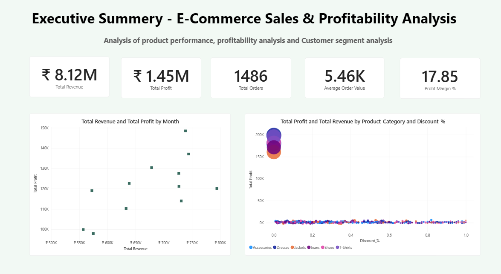
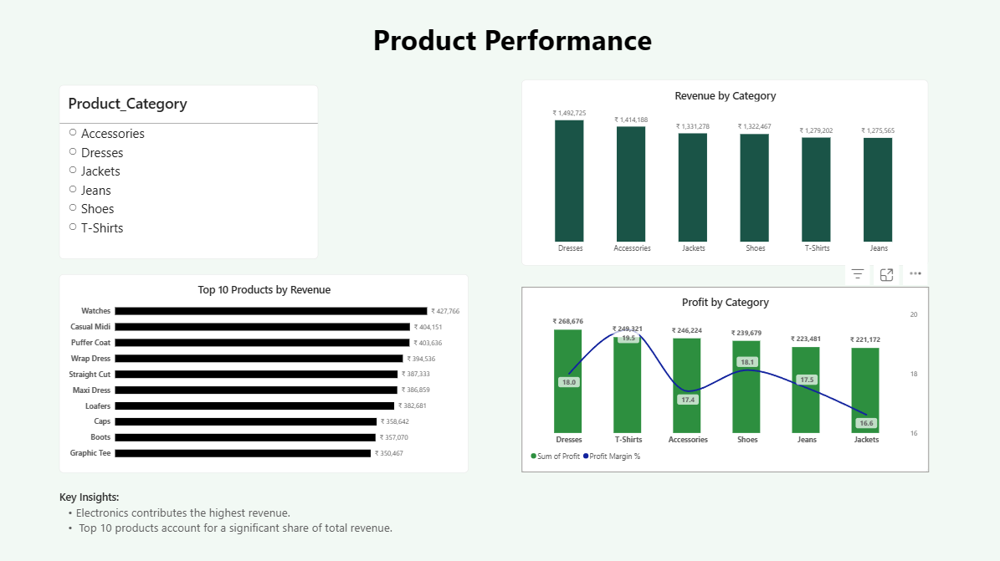
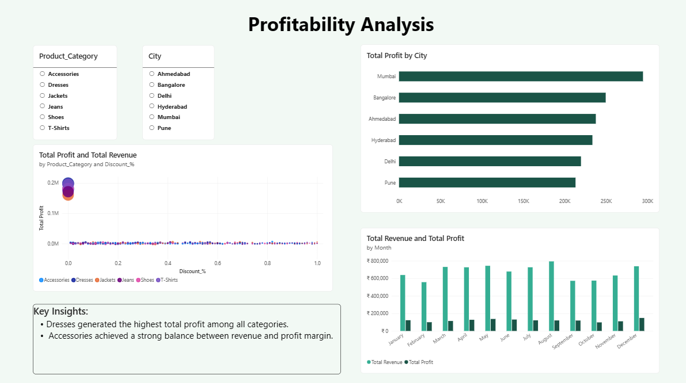
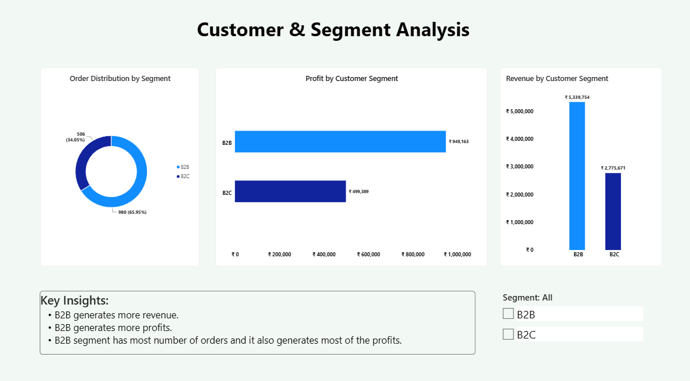

SQL Server + Power BI Business Analytics Project
This project analyzes e-commerce sales transactions to evaluate business performance, product profitability, customer segments, and regional sales trends. Using SQL Server for data cleaning and business analysis and Power BI for interactive dashboard development, the project provides valuable insights to support strategic business decisions.
The company wants to understand:
Total Records: 12,280




Several high-selling products generated relatively low profits, indicating that revenue alone is not a reliable measure of business performance.
Products with larger discounts experienced lower profit margins, highlighting the importance of balancing promotional strategies with profitability.
Revenue and profit varied significantly between B2B and B2C customers, helping identify the company's most valuable customer segment.
Some cities consistently generated higher revenue and profit, indicating opportunities to replicate successful sales strategies in underperforming regions.
This project demonstrates how SQL and Power BI can be used to transform raw sales data into meaningful business insights. The dashboard enables stakeholders to monitor revenue, profitability, customer behavior, and regional performance, supporting informed business decisions and continuous growth.